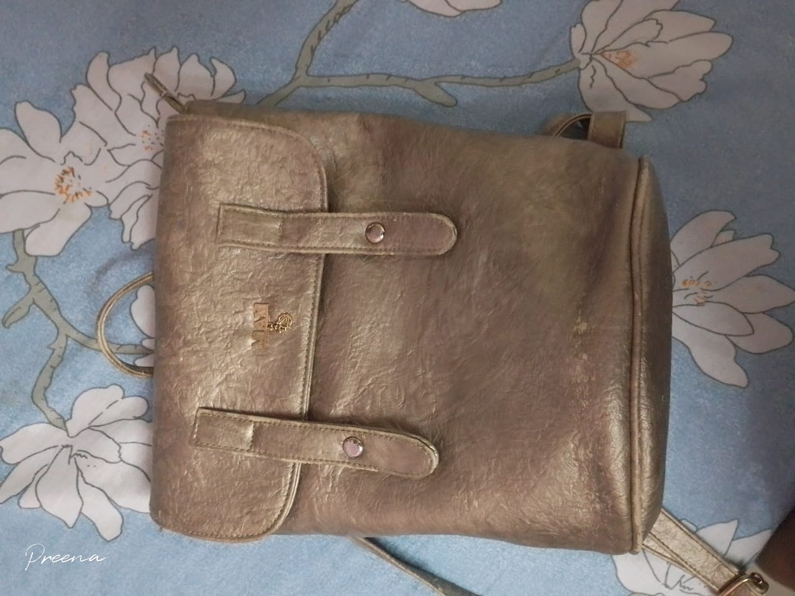
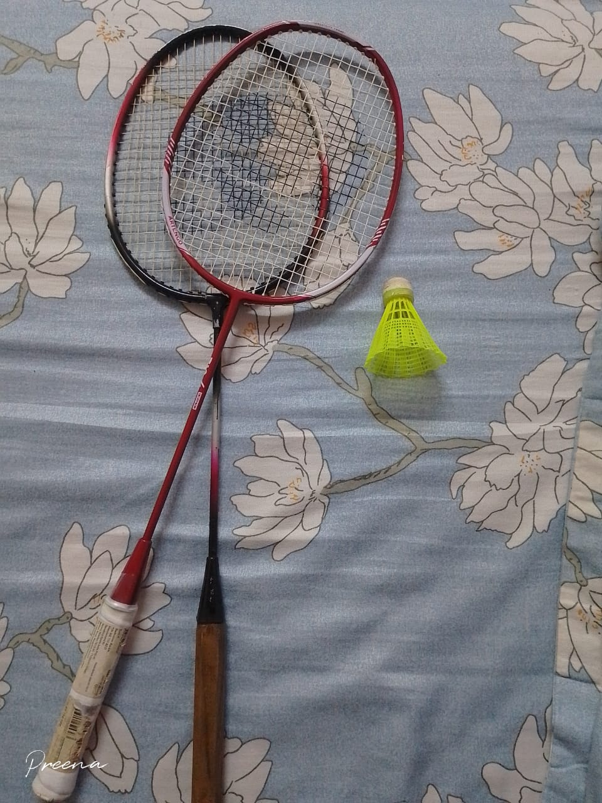
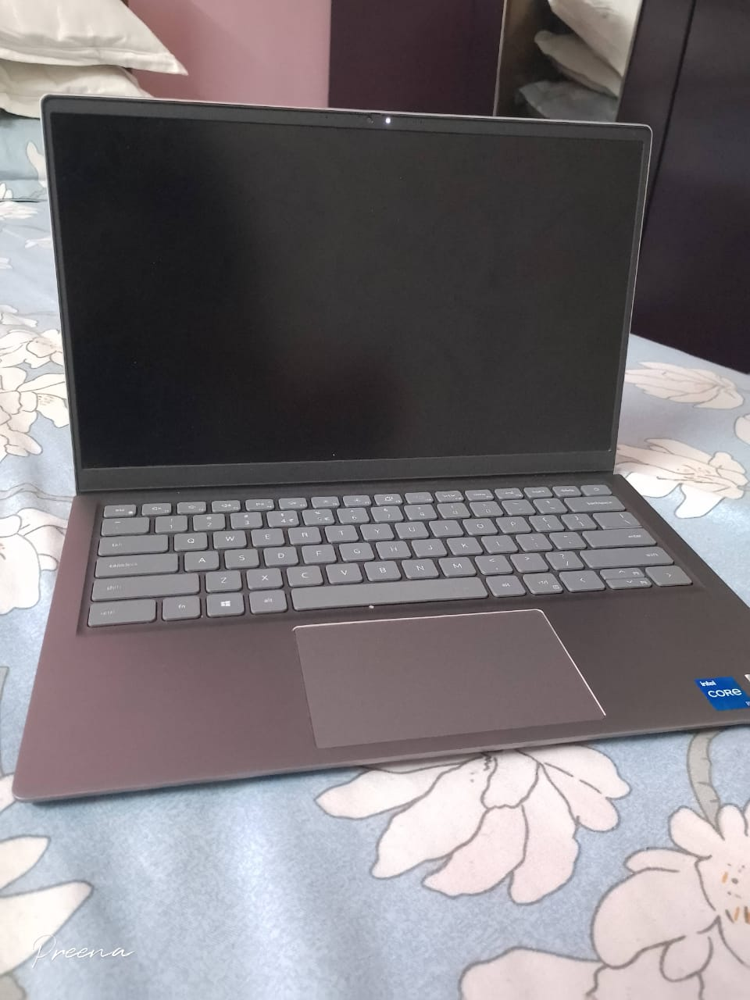
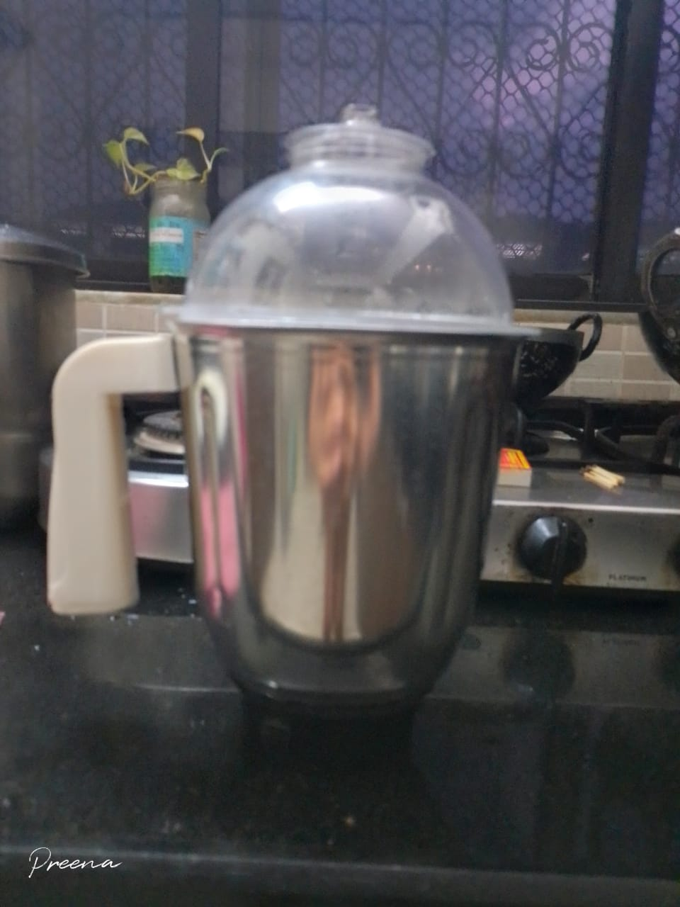
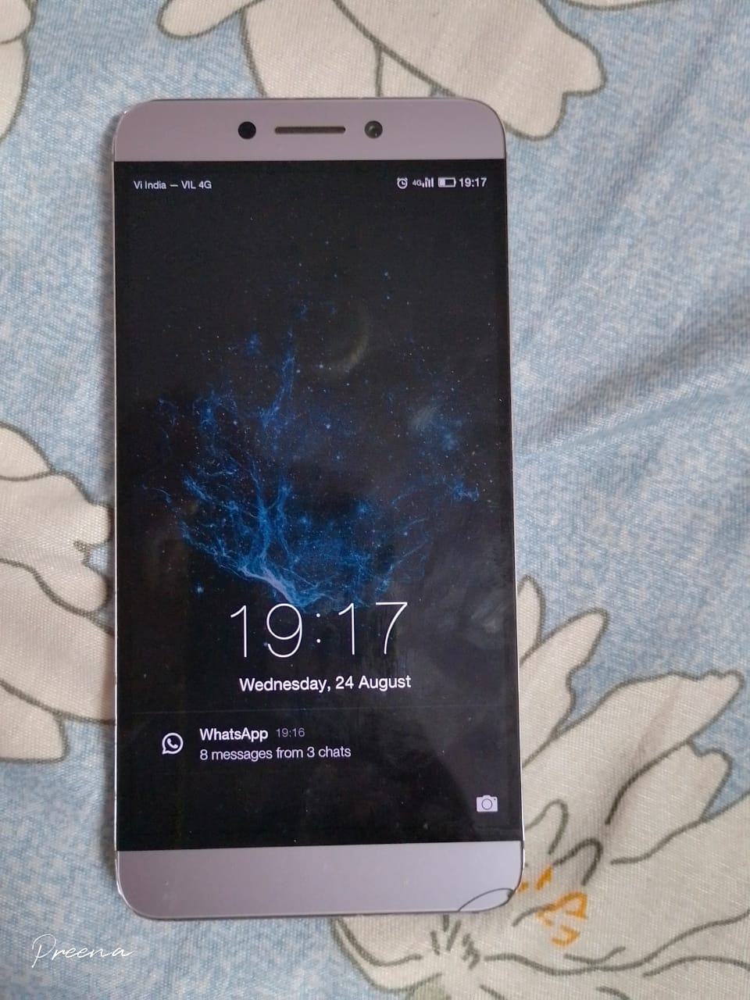

Case study between Mobile Net And Google Lens
Google Lens
VS
Mobilenet
Google Lens
VS
VS
Mobilenet
-
Test Image-

Output on GOOGLE LENS Output on Google Lens-Bag
Output on Mobilenet Model Output on Mobile Net-Postbag, Mailbag
Result -Google Lens is more accurate
-
Test Image-

Output on GOOGLE LENS Output on Google Lens-Batminton
Output on Mobilenet Model Output on Mobile Net-Racket,Strainer
Result - Google lens is more accurate
-
Test Image-
Output on GOOGLE LENS Output on Google Lens-Book
Output on Mobilenet Model Output on Mobile Net-Eraser,Pecil
Result - Google lens is more accurate
-
Test Image-

Output on GOOGLE LENS Output on Google Lens-Laptop
Output on Mobilenet Model Output on Mobile Net-Computer,laptop
Result -Both the Models are accurate
-
Test Image-

Output on GOOGLE LENS Output on Google Lens-Mixer
Output on Mobilenet Model Output on Mobile Net-Blow dryer
Result -Google lens is more accurate
-
Test Image-
Output on GOOGLE LENS Output on Google Lens-cup
Output on Mobilenet Model Output on Mobile Net-coffee mug
Result -Google lens is more accurate
-
Test Image-
Output on GOOGLE LENS Output on Google Lens-Painting
Output on Mobilenet Model Output on Mobile Net-Lighter,Mask
Result - Google lens is more accurate
-
Test Image-

Output on GOOGLE LENS Output on Google Lens-Phone
Output on Mobilenet Model Output on Mobile Net-Phone
Result - Both are accurate
-
Test Image-

Output on GOOGLE LENS Output on Google Lens-Rubics Cube
Output on Mobilenet Model Output on Mobile Net-Box,mask,Piggy bank
Result -Google lens is ore accurate
-
Test Image-
Output on GOOGLE LENS Output on Google Lens-Spoon
Output on Mobilenet Model Output on Mobile Net-Bow tie
Result -Google lens is more accurate